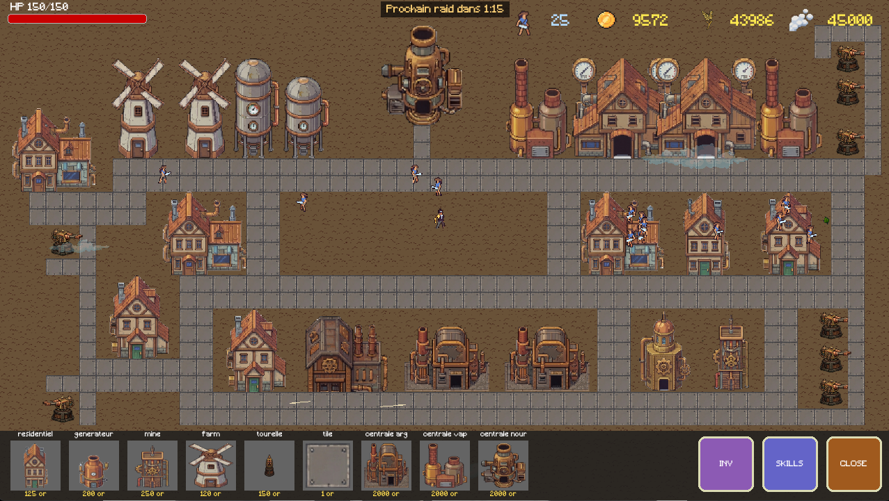
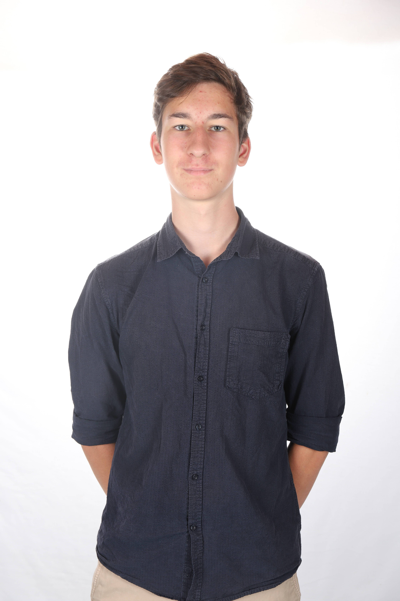
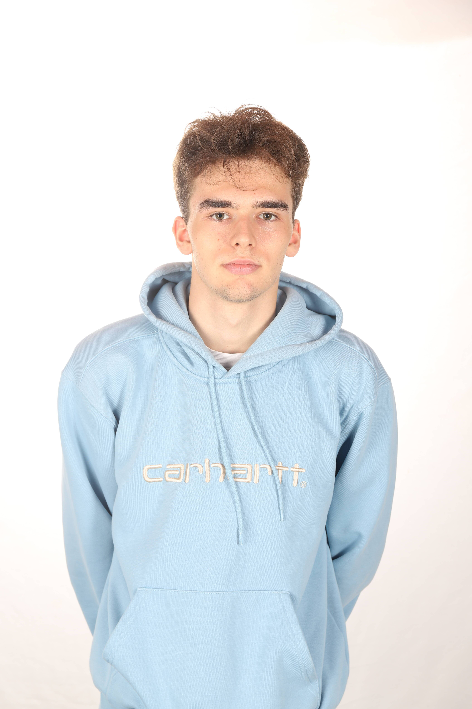

Projet Overdrive est un jeu de construction et de survie au style steampunk. Développez votre village en posant des bâtiments sur une grille, gérez trois ressources (or, nourriture, vapeur) et défendez votre base contre des vagues de monstres lors de raids automatiques.
Le jeu supporte un mode multijoueur en réseau local, un arbre de compétences pour débloquer des améliorations, et une sauvegarde automatique pour reprendre votre partie à tout moment.
Construisez. Gérez. Survivez. Affrontez les raids, agrandissez votre ville et progressez grâce à l'arbre de compétences dans une aventure steampunk pensée pour être jouée seul ou à plusieurs.

Responsable IA, créateur du site & graphiste
Reponsable combat & musique
Exploration et UI

Level designer
Responsable test et multijoueur